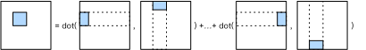
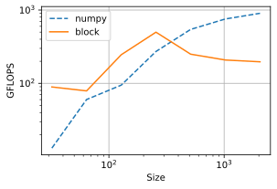
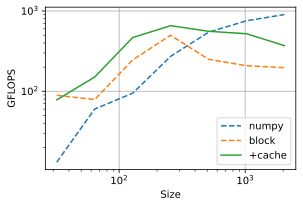

Improve Cache Efficiency by Blocking#
:label:ch_block_matmul_cpu
In :numref:ch_matmul_cpu we saw that properly reordering the loop axes to get more friendly memory access pattern, together with thread-level parallelization, could dramatically improve the performance for matrix multiplication.
The results show that for small-scale matrices, our performance outperforms the NumPy baseline.
However, for large matrices, we need to carefully consider the cache hierarchy discussed in :numref:ch_cpu_arch.
%matplotlib inline
import tvm
from tvm import te
import numpy as np
import d2ltvm
target = 'llvm -mcpu=skylake-avx512'
Before we started, let’s rerun the benchmark for NumPy as our baseline.
sizes = 2**np.arange(5, 12, 1)
exe_times = [d2ltvm.bench_workload(d2ltvm.np_matmul_timer(n)) for n in sizes]
np_gflops = 2 * sizes **3 / 1e9 / np.array(exe_times)
Blocked Matrix Multiplication#
One commonly used strategy is tiling matrices into small blocks that can be fitted into the cache.
The math behind it is that a block of \(C\), e.g. C[x:x+tx, y:y+ty] by the NumPy notation, can be computed by the corresponding rows of \(A\) and columns of \(B\). That is
C[x:x+tx, y:y+ty] = np.dot(A[x:x+tx,:], B[:,y:y+ty])
We can further decompose this matrix multiplication into multiple small ones
C[x:x+tx, y:y+ty] = sum(np.dot(A[x:x+tx,k:k+tk], B[k:k+tk,y:y+ty]) for k in range(0,n,tk))
This computation is also illustrated in :numref:fig_matmul_block.

:label:fig_matmul_block
In each submatrix computation, we need to write a [tx, ty] shape matrix, and reach two matrices with shapes [tx, tk] and [tk, ty]. We can compute such a computation in a single CPU core. If we properly choose the tiling sizes tx, ty and tk to fit into the L1 cache, which is 32KB for our CPU (refer to :numref:ch_cpu_arch). The reduced cache miss then should improve the performance.
Let’s implement this idea. In the following code block, we choose tx=ty=32 and tk=4 so that the submatrix to write has a size of 32*32*4=4KB and the total size of the two submatrices to read is 2*32*4*4=1KB. The three matrices together can fit into our L1 cache easily. The tiling is implemented by the tile primitive.
After tiling, we merge the outer width and height axes into a single one using the fuse primitive, so we can parallelize it. It means that we will compute blocks in parallel. Within a block, we split the reduced axis, reorder the axes as we did in:numref:ch_matmul_cpu, and then vectorize the innermost axis using SIMD instructions, and unroll the second innermost axis using the unroll primitive, namely the inner reduction axis.
tx, ty, tk = 32, 32, 4 # tile sizes
def block(n):
A, B, C = d2ltvm.matmul(n, n, n)
s = te.create_schedule(C.op)
# Tile by blocks, and then parallelize the computation of each block
xo, yo, xi, yi = s[C].tile(*C.op.axis, tx, ty)
xy = s[C].fuse(xo, yo)
s[C].parallel(xy)
# Optimize the computation of each block
ko, ki = s[C].split(s[C].op.reduce_axis[0], factor=tk)
s[C].reorder(ko, xi, ki, yi)
s[C].vectorize(yi)
s[C].unroll(ki)
return s, (A, B, C)
s, (A, B, C) = block(64)
print(tvm.lower(s, [A, B, C], simple_mode=True))
produce C {
parallel (x.outer.y.outer.fused, 0, 4) {
for (x.inner.init, 0, 32) {
C[ramp((((floordiv(x.outer.y.outer.fused, 2)*2048) + (x.inner.init*64)) + (floormod(x.outer.y.outer.fused, 2)*32)), 1, 32)] = x32(0f)
}
for (k.outer, 0, 16) {
for (x.inner, 0, 32) {
C[ramp((((floordiv(x.outer.y.outer.fused, 2)*2048) + (x.inner*64)) + (floormod(x.outer.y.outer.fused, 2)*32)), 1, 32)] = (C[ramp((((floordiv(x.outer.y.outer.fused, 2)*2048) + (x.inner*64)) + (floormod(x.outer.y.outer.fused, 2)*32)), 1, 32)] + (x32(A[(((floordiv(x.outer.y.outer.fused, 2)*2048) + (x.inner*64)) + (k.outer*4))])*B[ramp(((k.outer*256) + (floormod(x.outer.y.outer.fused, 2)*32)), 1, 32)]))
C[ramp((((floordiv(x.outer.y.outer.fused, 2)*2048) + (x.inner*64)) + (floormod(x.outer.y.outer.fused, 2)*32)), 1, 32)] = (C[ramp((((floordiv(x.outer.y.outer.fused, 2)*2048) + (x.inner*64)) + (floormod(x.outer.y.outer.fused, 2)*32)), 1, 32)] + (x32(A[((((floordiv(x.outer.y.outer.fused, 2)*2048) + (x.inner*64)) + (k.outer*4)) + 1)])*B[ramp((((k.outer*256) + (floormod(x.outer.y.outer.fused, 2)*32)) + 64), 1, 32)]))
C[ramp((((floordiv(x.outer.y.outer.fused, 2)*2048) + (x.inner*64)) + (floormod(x.outer.y.outer.fused, 2)*32)), 1, 32)] = (C[ramp((((floordiv(x.outer.y.outer.fused, 2)*2048) + (x.inner*64)) + (floormod(x.outer.y.outer.fused, 2)*32)), 1, 32)] + (x32(A[((((floordiv(x.outer.y.outer.fused, 2)*2048) + (x.inner*64)) + (k.outer*4)) + 2)])*B[ramp((((k.outer*256) + (floormod(x.outer.y.outer.fused, 2)*32)) + 128), 1, 32)]))
C[ramp((((floordiv(x.outer.y.outer.fused, 2)*2048) + (x.inner*64)) + (floormod(x.outer.y.outer.fused, 2)*32)), 1, 32)] = (C[ramp((((floordiv(x.outer.y.outer.fused, 2)*2048) + (x.inner*64)) + (floormod(x.outer.y.outer.fused, 2)*32)), 1, 32)] + (x32(A[((((floordiv(x.outer.y.outer.fused, 2)*2048) + (x.inner*64)) + (k.outer*4)) + 3)])*B[ramp((((k.outer*256) + (floormod(x.outer.y.outer.fused, 2)*32)) + 192), 1, 32)]))
}
}
}
}
From the generated C-like codes, we can see that parallel is placed on the x.outer, i.e. xo, axis. The vectorization translated the axis yi, whose length is 32, into ramp with a stride 1 and width 32. Besides, the axis ki is also unrolled into 4 sequential operations to reduce the cost of the for-loop.
blocked_gflops = d2ltvm.bench_matmul_tvm(block, sizes, target)
d2ltvm.plot_gflops(sizes, [np_gflops, blocked_gflops], ['numpy', 'block'])

The benchmark results show that our program is as good as NumPy for small matrices, but still doesn’t do well for large ones. One major reason is because both read and write of these submatrices are not continuous after tiling.
Write Cache#
The non-continuous write issue is severer than the non-continuous read. This is because we read once of each submatrix of A and B, but need to write by n times for the submatrix of C. In the following code block, we first write the results into a local buffer for each submatrix computation, and then write them back to C. It can be done by the cache_write method. We specify the buffer being used for each block by placing it within the yo axis using the compute_at primitive. The rest optimization is the same as before, but note that we need to use s[Cached] instead of s[C] to optimize the submatrix computation.
def cached_block(n):
A, B, C = d2ltvm.matmul(n, n, n)
s = te.create_schedule(C.op)
# Create a write cache for C
CachedC = s.cache_write(C, 'local')
# Same as before, first tile by blocks, and then parallelize the
# computation of each block
xo, yo, xi, yi = s[C].tile(*C.op.axis, tx, ty)
xy = s[C].fuse(xo, yo)
s[C].parallel(xy)
# Use the write cache for the output of the xy axis, namely a block.
s[CachedC].compute_at(s[C], xy)
# Same as before to optimize the computation of a block .
xc, yc = s[CachedC].op.axis
ko, ki = s[CachedC].split(CachedC.op.reduce_axis[0], factor=tk)
s[CachedC].reorder(ko, xc, ki, yc)
s[CachedC].unroll(ki)
s[CachedC].vectorize(yc)
return s, (A, B, C)
s, (A, B, C) = cached_block(512)
print(tvm.lower(s, [A, B, C], simple_mode=True))
produce C {
parallel (x.outer.y.outer.fused, 0, 256) {
// attr [C.local] storage_scope = "local"
allocate C.local[float32 * 1024]
produce C.local {
for (x.c.init, 0, 32) {
C.local[ramp((x.c.init*32), 1, 32)] = x32(0f)
}
for (k.outer, 0, 128) {
for (x.c, 0, 32) {
C.local[ramp((x.c*32), 1, 32)] = (C.local[ramp((x.c*32), 1, 32)] + (x32(A[(((floordiv(x.outer.y.outer.fused, 16)*16384) + (x.c*512)) + (k.outer*4))])*B[ramp(((k.outer*2048) + (floormod(x.outer.y.outer.fused, 16)*32)), 1, 32)]))
C.local[ramp((x.c*32), 1, 32)] = (C.local[ramp((x.c*32), 1, 32)] + (x32(A[((((floordiv(x.outer.y.outer.fused, 16)*16384) + (x.c*512)) + (k.outer*4)) + 1)])*B[ramp((((k.outer*2048) + (floormod(x.outer.y.outer.fused, 16)*32)) + 512), 1, 32)]))
C.local[ramp((x.c*32), 1, 32)] = (C.local[ramp((x.c*32), 1, 32)] + (x32(A[((((floordiv(x.outer.y.outer.fused, 16)*16384) + (x.c*512)) + (k.outer*4)) + 2)])*B[ramp((((k.outer*2048) + (floormod(x.outer.y.outer.fused, 16)*32)) + 1024), 1, 32)]))
C.local[ramp((x.c*32), 1, 32)] = (C.local[ramp((x.c*32), 1, 32)] + (x32(A[((((floordiv(x.outer.y.outer.fused, 16)*16384) + (x.c*512)) + (k.outer*4)) + 3)])*B[ramp((((k.outer*2048) + (floormod(x.outer.y.outer.fused, 16)*32)) + 1536), 1, 32)]))
}
}
}
for (x.inner, 0, 32) {
for (y.inner, 0, 32) {
C[((((floordiv(x.outer.y.outer.fused, 16)*16384) + (x.inner*512)) + (floormod(x.outer.y.outer.fused, 16)*32)) + y.inner)] = C.local[((x.inner*32) + y.inner)]
}
}
}
}
Note from the generated pseudo codes that we initialize C.local within the yo axis, and the size of C.local is tx * ty = 1024.
cached_gflops = d2ltvm.bench_matmul_tvm(cached_block, sizes, target)
d2ltvm.plot_gflops(sizes, [np_gflops, blocked_gflops, cached_gflops],
['numpy', 'block', '+cache'])

We can see the the write cache improves the performance for matrix multiplication on large sizes.
Summary#
Blocked tiling improves cache efficiency for matrix multiplication.
Data to be frequently read and written should be placed in a buffer explicitly to reduce cache misses.
Exercises#
Try different hyperparameters for
tx,tyandtx.Try different axis orders.
Benchmark on larger matrices, observe if there is still performance gap between NumPy. If so, try to explain the reason.
Evaluate the correctness of the computed results.